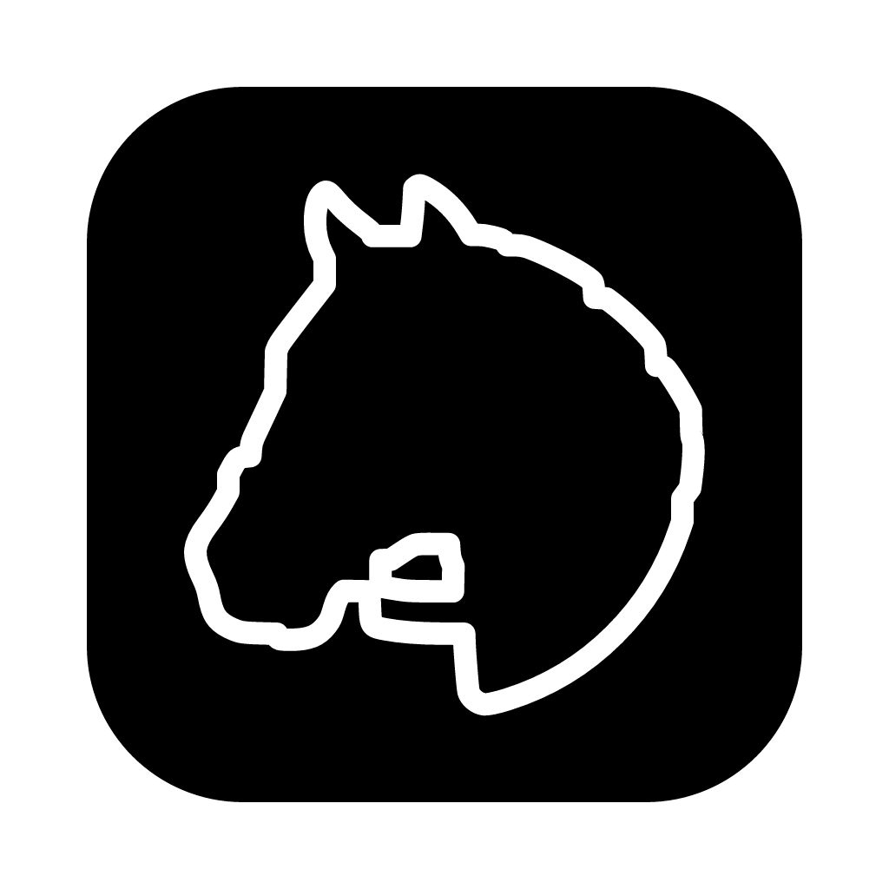

An LLM harness I built for myself: dictation, chat without the persona, notes, and tasks. Offline-first. Full control over the inputs, the outputs, and everything in between.
I have my own opinions about how I want to use an LLM. I don't want it personified. I want it voice-first. I want it as a creative tool: not an answer engine, not something designed to drive engagement. Commercial tools are built for a mainstream audience, and that's fine. They're just not built for me.
I'm also building this to learn agentic harness design and engineering firsthand. Coding tools have finally gotten good enough to keep up with my ambitions, so it felt like the right time to try building one myself.
It's more art project than product, so I've open-sourced it for anyone who wants to read the code.
Colophon: Tauri (Rust, React), Swift UI, OpenAI, Apple Speech, Cloudflare R2, IBM Plex Sans & Mono